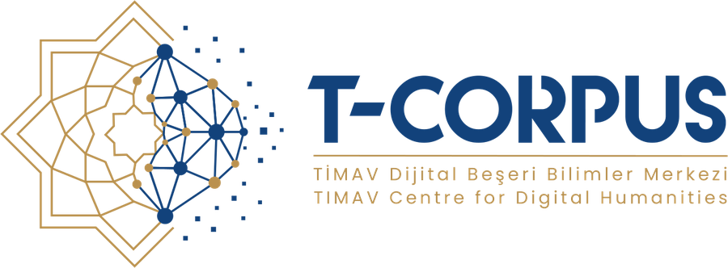

Dijital beşerî bilimler nedir?
Beşerî bilimlerin sorularını sayılabilir, haritalanabilir ve aranabilir malzemeyle sormak. Müstakil yeni bir ilim değil; mu'cem, fihrist ve tabakat geleneğinin dijital araçlarla sürdürülmesi. Peki bu üç kelime pratikte ne demek?
SAYILABİLİR
"Kaç kez, hangi oranda, hangi dönemde?" Klasik karşılığı: mu'cem / konkordans Metnin tamamı tek tek okunmadan da bir eğilim ölçülebilir. Örnek: Fütûhu'l-büldân'ın bir bölümünde sulh ve kuvvet ifadelerinin oranı: kitabın genelinde antlaşmayla giriş %52,2 iken bu bölümde tersine dönüyor. Aşağıda canlı sayacı dene ↓HARİTALANABİLİR
"Nerede, hangi güzergâhla, hangi yoğunlukta?" Klasik karşılığı: mesâlik ve memâlik literatürü Yer adı koordinata bağlanınca desen görünür hâle gelir. Örnek: 226 fetih kaydı haritaya döküldüğünde, sahil şehirlerinde antlaşma, dağlık bölgelerde kuvvet yoluyla giriş yoğunlaşıyor; desen edebî değil, coğrafî. CBS (coğrafî bilgi sistemleri) durağında haritayı gör ↓ARANABİLİR
"Bu ibare nerede geçiyor, hangi bağlamda?" Klasik karşılığı: fihrist / etrâf tasnifi Bir cümle, binlerce sayfa içinde saniyeler içinde bulunur ve bağlamıyla gösterilir. Örnek: bu sitedeki tezgâh, her delil cümlesini kaynak metinde arayıp bulduğu yeri çevresindeki satırlarla birlikte önünüze koyar. 4. durakta kendin dene ↓Bu üçlü tasnif keyfî değil: Franco Moretti, Graphs, Maps, Trees (Verso, 2005) adlı kitabında edebiyat tarihine bakmanın üç soyut modelini ( grafikler, haritalar, ağaçlar ) aynı sırayla önermişti; biz aynı üçlüyü klasik metin geleneğine uyguluyoruz. Kitabın kavramsal çerçevesini toplayan derlemenin Türkçesi de var: Uzak Okuma, çev. Onur Gayretli, İstanbul Bilgi Üniversitesi Yayınları, 2021.
Peki duygu analizi, konu modelleme, metin yeniden kullanımı? Bunlar da bu alanın sık kullanılan araçları; üçünün de bir tuzağı var:
Duygu analizi · konu modelleme · metin yeniden kullanımı : üç mercek daha, dürüst uyarılarıyla
Bu sayfa dört kavram üzerine kuruldu, çünkü ilk projede en çok işe yarayanlar onlar. Ama alanda sık geçen üç yöntem daha var; her birinin bir tuzağı var ve tuzağı bilinmeden kullanılmaz.
Tuzak: hazır duygu modelleri modern dille eğitildi. Klasik Arapça ya da Osmanlı Türkçesi bir metne doğrudan uygulandığında ölçtüğü şey çoğu zaman metnin tonu değil, modelin o dile ne kadar yabancı olduğudur. Kullanacaksanız: kendi alanınızdan elle etiketlenmiş bir sınama kümesi kurun, modelin başarımını önce ölçün, sonra kullanın; o ölçümü de makalede verin.
Tuzak: konu sayısını siz seçersiniz ve çıkan kümeler yorumlanmayı bekler; model onlara ad vermez. Keşif için iyidir; delil için tek başına yetmez.
Tuzak: benzerlik eşiğini siz belirlersiniz. Eşik düşükse her şey birbirine benzer, yüksekse gerçek nakiller kaçar. Eşiği beyan edin.
Üçünün ortak dersi, bu sayfanın baştan beri tekrar ettiği kuralın aynısı: aracın ne ölçtüğünü beyan etmeden sonucu savunamazsınız.
Hangi sorulara cevap verir? Solda klasik soru, sağda dijital ölçekte alacağı biçim:
Altı sorunun altısı da eski sorular. Değişen: cevabın ölçeği ve denetlenebilirliği, çünkü her kaydın delili kaynağa bağlı kalıyor.
Kısa bir tarihçe : bu yöntemin kökleri kendi ilim geleneğimizde. Sekiz durak, üç görünüşte: künye şeridi, gerçek ölçekli zaman çizgisi ve harita. Birinden birine dokunun; üçü birlikte hareket eder.
Üstteki eksen gerçek ölçekli: bin yılda iki durak. Alttaki büyüteç son yüz yılı açıyor: altı durak. Şeridin söylediği tek cümle bu: yöntemin nesebi eski, hızlanması yeni.
Bu ilimlerde tasnif, fihrist ve mu'cem geleneği asırlardır sürüyor. Değişen, emeğin bir kısmının makineye geçmesi; usul ve hüküm araştırmacıda kalıyor.
Aynı malzemeye dört mercek ; malzememiz hep aynı: Belâzürî'nin (ö. 279/892-93) Fütûhu'l-büldân adlı eseri. Merceğe dokun, ne gösterdiğini gör:
İki merceği hemen şimdi, bu sayfada dene:
uzak okuma · distant readingKavram: Uzak okuma (İng. distant reading)
Meraklısına: sayaç metni tam olarak nasıl sayıyor?
فَفَتَحَهَا عَنْوَةًmetindeki hâli, harekeleriyleففتحها عنوهharekeler düşer · ة→ه · أ/إ/آ→ا · ء kalkarففتحها عنوهkök dizisi geçiyor mu? geçtiyse +1Ctrl+F'ten tek farkı: kuralları açıkça yazdık : hangi harf neye dönüşür, sayım köke mi yazıma mı bakar. Kural açık olunca sayım tekrarlanabilir olur; kuralı açık olunca tekrarlanabilir olur. Bu, sayımın denetlenebilmesinin şartlarından biridir; yorumun doğruluğunu tek başına garanti etmez. Aynı sadeleştirme (normalizasyon: imlâ farklarını eşitleme), 4. duraktaki delil denetiminin de motorudur; KISMÎ eşleşmeler tam bu tablodan doğar.
Yakın okuma tek pasajın derinliğidir; uzak okuma bin sayfanın kuşbakışıdır. Rakip değiller; ikisi bir dürbünün iki ucu. sayım gerçek: Belâzürî kesitinden canlı sayılıyor
ağ analizi · network analysisKavram: Ağ analizi (İng. network analysis)
- Girdi: Kayıtlar giriyor (kim kimden rivayet etti)
- İşlem: Her kişi bir düğüm, her rivayet bir bağ oluyor
- Çıktı: Kimin merkezde olduğu görünüyor
Meraklısına: bir ok nasıl doğar?
- 1. adımMetinde kalıp fiili bul
أَخَذَ الشافعيُّ عن محمدِ بن الحسنTabakat kaynağındaki cümle. Yeşil olan kalıp fiil, turuncu olan hocanın adı.
- 2. adımFiilin tipini ve yönünü oku أخذ عن = «ondan aldı», yani ders okudu. Bu bir talebelik kenarıdır ve yönü kesindir: ok, okuyandan okutana değil, okutandan okuyana gider. Kural tek cümle: ok kimden okudu sorusunu gösterir.
- 3. adımKenarı çiz, delilini yanına yaz
Şeybânî ─▶ ŞâfiîKenar tek başına yayımlanmaz: yukarıdaki cümle, kaynağı ve sayfasıyla birlikte kenarın delili olarak kaydedilir.
| Kalıp fiil | Ne demek | Doğurduğu kenar |
|---|---|---|
| أَخَذَ عن | ondan aldı (ders okudu) | talebelik |
| تَفَقَّهَ على | onun yanında fıkıh tahsil etti | talebelik |
| سَمِعَ من | ondan işitti (semâ yoluyla) | talebelik |
| قَرَأَ على | ona okudu (kıraat yoluyla) | talebelik |
| رَوَى عن | ondan rivayet etti | rivayet — ayrı tutulur |
Son satır neden ayrı: rivayet, ders halkasında bulunmayı gerektirmez. İkisini aynı kenar saymak, hoca-talebe ağını olduğundan yoğun gösterir. Kalıplar gerçek; yukarıdaki örnek cümle temsilîdir.
Bu merceğin yayımlanmaya giden hâli: aynı mantık kişiler yerine ilimlere uygulandığında Fârâbî'nin, Gazzâlî'nin ve İbn Haldûn'un ilim tasnifleri karşılaştırılabilir hâle geliyor: dokuz ilişki tipi, bir yön kuralı ve her kenara metinden bir delil ibaresiyle. Beşinci duraktaki Felsefe & İlimler Tasnifi rotası bu yolu adım adım veriyor.
Gerçek bağlar, tabakat kaynaklarından; ok yönü: kimden okudu. Düğümlere dokun: Şâfiî, Hicaz ile Irak havzalarını birleştiren köprü düğümdür: er-Risâle'nin iki dünyayı konuşturması tesadüf değil. Şeybânî ise hem Ebû Hanîfe'nin talebesi hem Mâlik'ten el-Muvattaʾ râvisi: ikinci köprü. Tabakātın bildiği bilgi, grafiğin diliyle. yerleşim şematik; bağlar kaynaklı ; canlısını Gephi ile kendiniz çizebilirsiniz (tarifi Kütüphane'de). Ağ çözümlemesinin edebiyat metinlerine uygulanışı için: Moretti, "Ağ Kuramı, Olay Örgüsü Analizi", Uzak Okuma içinde, s. 173.
Sınırları baştan çizelim · üç yaygın zan, üç cevap:
Sıradaki iki kavram kendi duraklarında: CBS (harita) ve veri seti ↓
Koordinat verilince kitap haritaya döner
Örnek katman: İbn Battûta'nın (ö. 770/1368-69) Tuhfetü'n-nüzzâr adlı seyahatnâmesinin (er-Rihle) islamicatlas.org'daki verisi: 317 koordinatlı durak; veri setinde her durak eserdeki cümlesine bağlıdır. Beyaz halkalı 8 vitrin durağına dokunun: delil pasajı açılır.
Rihle'nin 317 durağı · islamicatlas.org verisi · harita: OpenStreetMap
Haritadaki her nokta aslında bir kayıttır: şehir, tarih ve kaynağındaki cümle. Sıradaki kavram, o kaydın konduğu yer ↓
Veri seti: etiketli çekmeceli dolap
Yayımlanmış EICD-B veri setinden gerçek bir kayıt (EICD-B: Belâzürî'nin fetih kayıtlarından derlenen veri seti; 2. durakta yakından tanıyacaksın). Çekmeceleri aç; en kıymetlisi DELİL çekmecesi.
"Makinenin gördüğü" düz metnin adı JSON'dur: aynı çekmeceli dolabın makine için yazılmış hali. 4. durakta modelden tam bu biçimi isteyeceksin.
Ama bir kayıt veri seti değildir. Veri seti, aynı çekmecelere sahip kayıtların tamamıdır. Açtığınız çekmece, yayımlanan EICD-B'nin 226 kaydından biri. Diğer 225'i de burada:
Renkler yayımlanan dağılımdan (EICD-B, Tablo 2 ve Tablo 4). Karelerin sırası temsilîdir : hangi karenin hangi şehir olduğu bu görselde yoktur; burada gösterilen yalnız oranlardır. Siyah çerçeveli kare, yukarıda çekmecelerini açtığınız kayıt.
Bir kayıt yığınını veri seti yapan sekiz şey
Sağ sütun EICD-B'nin kendi değerleridir. Kendi veri setiniz için bu sekiz satırı doldurabiliyorsanız, elinizde yayımlanabilir bir şey var demektir.
📓 Kod defteri (İng. codebook) · her çekmecenin kuralı
Kod defteri, veri setinin kullanma kılavuzudur: hangi alan ne demek, hangi değerleri alabilir, nasıl türetildi, boş kalabilir mi. Kod defteri olmayan veri seti okunamaz ; altı ay sonra kendiniz de okuyamazsınız.
Kırmızı kenarlı satırlar zorunlu alanlardır: biri boşsa kayıt veri setine girmez.
Dört kavram tamam: uzak okuma · ağ · CBS · veri seti. Şimdi bir araştırmacının bunları hangi sırayla kullandığına bakalım ↓
Dosya biçimleri: .txt · .md/.mARkdown · JSON · CSV nedir?
.txt (İng. plain text, düz metin): hiçbir biçimlendirme içermeyen saf metin dosyası; her cihazda ve her programda açılır. Klasik metinlerin dijital nüshaları çoğunlukla bu biçimdedir.
.md (Markdown): düz metne birkaç basit işaret ekleyerek başlık, liste ve vurgu tanımlayan biçim. OpenITI'nin kullandığı .mARkdown bunun klasik metinlere uyarlanmış hâlidir: ### | bölüm başlığı, ~~ satır devamı, PageV05P022 matbu neşrin cilt/sayfa numarası demektir.
JSON (JavaScript Object Notation): "etiket": değer çiftleriyle yazılan veri biçimi. Yukarıdaki çekmeceli dolabın makine tarafındaki karşılığı budur; hem insan hem makine okur, düz metindir, özel program gerektirmez.
CSV (Comma-Separated Values, virgülle ayrılmış değerler): tablo satırlarını düz metin olarak saklar; Excel ve Google E-Tablolar'da doğrudan açılır. Bir veri seti çoğu zaman aynı anda hem JSON hem CSV olarak yayımlanır.
Bu kaydın dolapta 225 kardeşi var; delillerin %91,6'sı kaynağında bulundu (EICD-B). Dolap dolunca üç mercek birden çalışır: sayım da harita da ağ da buradan beslenir.
Meraklısına: bu beş çekmece neden bu beşi? · şemanın savunması
Yıl neden sayı? Sıralanabilsin, çizilebilsin diye; "erken dönem" yazan çekmece grafik üretmez. Tür neden kapalı liste? Serbest metin sayılamaz; üç kapı tartışmayı disipline eder · sınıra düşen vaka "çekimser"e gider, yok sayılmaz. Delil neden zorunlu? Zorunlu olmazsa dolap, zarif görünüşlü bir zan yığınına döner. Sened neden ayrı çekmece? Kitap → neşir → dijital sürüm → veri seti zinciri koparsa, beş yıl sonra kimse sayıları yeniden üretemez. Şema, tezinin ilk taslağıdır: hangi çekmeceyi açtığın, neyi soru saydığını ele verir.
Araştırmacı nasıl çalışır: malzemeden ürüne
Aynı beş adımı iki ölçekte göreceksiniz: yayımlanmış bir fetih çalışması ve henüz sınanmamış bir hadis taslağı. İkincisi bir sonuç değil; yöntemin başka bir alana nasıl taşınacağını gösteren örnektir.
Her istasyonda üç katman var: ilke · örnek · meraklısına usta notu. Yayımlanmış örnek emsal kartında künyesiyle duruyor.
3. istasyondaki o dönüşümü yapan makinenin içine bakalım ↓
Makine bunu nasıl yapar?
Önce cebindeki ipucu. Telefonunun klavyesi yıllardır aynı oyunu oynuyor:
Bu durak meraklısına: aleti kullanmak için içini bilmek şart değil. Aceleniz varsa doğrudan 4. durağa (90 saniyelik deneme) geçebilir, buraya sonra dönebilirsiniz.
ChatGPT = aynı fikir × trilyonlarca kelime × dev bir bağlam.
Yüzdeler temsilîdir, ama klavyeniz de böyle bir yarış tutar.
Bu ölçekte iyi tahmin için dilbilgisini, üslupları, olgu kalıplarını sıkıştırmak zorunda kaldı. Bu temel katın üstüne iki kat daha giydi. Üç çekmeceyi sırayla aç:
MCP nedir? (İng. Model Context Protocol, model bağlam protokolü): sohbet modelinin dış kaynaklara standart ve denetlenebilir biçimde bağlanmasını sağlayan açık bir protokoldür; sohbet arayüzüne takılan eklenti gibi düşünülebilir. Uygun bir bağlantı kurulduğunda model, YÖK Ulusal Tez Merkezi, DergiPark veya bir kütüphane kataloğu gibi kaynaklarda doğrudan sorgu yapar; cevabını ezberinden değil, o kaynaktan dönen kayıtlardan verir ve hangi sorgunun çalıştığı görülebilir. Delil yükünü kaldırmaz: künyeyi yine kaynağında teyit edersiniz, ama aradaki kopyala-yapıştır emeğini kaldırır.
Şimdi bu ipuçlarını mühendisliğe çevirelim: beş adım, beşi de dokunmatik. Örnek cümlemiz, harita durağından tanıdığın seyyahın yola çıkışı: İbn Battûta'nın Tanca kaydı.
parçalama · tokenizationArapça mı okur? Hayır: önce parçalar, sonra sayıya çevirir
Model harf de kelime de görmez; parça numaraları görür. Arapça, İngilizceden daha çok parçaya bölünür; işte dil eşitsizliğinin mühendislik kökü. bölme temsilîdir; gerçeğini tiktokenizer'da kendi cümlenle dene. Ve dikkat: ة ile ه farklı numaralardır; "Sıra sende" durağında göreceğin KISMÎ eşleşmelerin kökü buraya iner.
Meraklısına: bu bölme nasıl seçildi?
Yöntemin adı alt-kelime parçalamadır (BPE ailesi): sözlük, eğitim metinlerinde en sık geçen harf dizilerinden kendiliğinden kurulur ve tipik olarak 100–250 bin parçadır. Arapçanın zengin çekimi yüzünden aynı anlam daha çok parçaya bölünür; bu, hem maliyeti hem bağlam penceresinin doluşunu etkiler. Aynı parçanın numarası her zaman aynıdır; "anlam" bu numarada değil, bir sonraki katta başlar.
anlam yerleştirme · embeddingHer parçayı anlam haritasına koyar
- Girdi: Metin parçaları giriyor
- İşlem: Her parça sayı dizisine çevriliyor
- Çıktı: Yakın anlamlılar haritada yan yana düşüyor
Sözlük değil, harita: eğitim sırasında her parça bu uzayda bir yer edinir; yakın anlam yakın düşer. فتح iki mahalleye de komşudur: "açmak" mı, "fethetmek" mi? Onu bir sonraki adım söyler. yerleşim temsilîdir oysa gerçekte binlerce boyut vardır, biz ikisini görüyoruz.
Hiç bilmiyorum: «nokta», «vektör», «yakınlık» ne demek?
bağlam tartısı · attentionHer kelimeyi yazarken bütün pasajı tartar
Ağır basan kelimeler yanar: فتح'in hangi mahallesi kazanacaksa onu bu tartı belirler. Müfessir buna siyak-sibak der; burada aynı iş, mekanikleşmiş halde. vurgular temsilî; canlısı için Transformer Explainer.
Meraklısına: bu ağırlıkları kim yazdı?
Kimse. Mekanizmanın adı öz-dikkattir (self-attention): her parça, pasajdaki diğer bütün parçalara "sana ne kadar bakayım?" diye sorar; ağırlıklar elle yazılmış kural değil, eğitimde kendiliğinden oluşmuş değerlerdir. Ve tek tartı yoktur: her katta onlarca "kafa" aynı cümleye farklı gözle bakar: Çekirdeğe iniş · Kat 2'de "kim?" kafası ile "ne zaman?" kafasını yan yana dene.
olasılık yarışı · softmaxCevap vermez; metni devam ettirir, çünkü her adım bir yarıştır
Bütün hüner, en olası devamın doğru kayıt olacağı bir başlangıç kurmakta; tıpkı aruz kalıbı verilmiş şaire mısra tamamlatmak gibi. Canlı olasılık çubukları için: Transformer Explainer.
Meraklısına: yarışın matematiği
Üretimin adı otoregresyondur: her seferinde TEK parça seçilir, cümleye eklenir ve bütün hesap yeniden koşar. Yarışın ham puanları (logit) softmax denen işlemle olasılığa çevrilir; "sıcaklık" bu dağılımı yayar ya da sivriltir. Çekirdeğe iniş · Kat 3'te sürgüyü çekip GERÇEK softmax'la oyna: T=0,2'de favori %99,6; T=2'de %43.
şemalı çıktı · constrained decodingKapıları azalt, kopyayı serbest bırak
Delili ezberinden söylemesi yasak, önündekinden göstermesi serbest: kopyalamak uydurmaktan kolaydır; model kolaya gider, biz kolayı doğruya bağlarız.
Meraklısına: kapıları kim kapatır?
Tekniğin adı kısıtlı çözümleme / şemalı çıktıdır (constrained decoding): yarışa yalnız izinli parçaların katılmasına izin verilir; örneğin üç değerli sözlük, geçerli JSON, zorunlu "delil" alanı hep bu ailedendir. Delil şartı ayrıca modelin en güçlü içgüdüsünü (bağlamdan kopyalamayı) doğruluğun hizmetine koşar; EICD-B hattının %91,6'lık delil doğrulaması (kayıtların %35,0'ı harfiyen + %56,6'sı imlâ farkıyla bulundu) bu iki vidanın eseridir.
🔬 Çok meraklısına: çekirdeğe iniş · dört mekanizma İleri düzey
Kat 1 · Kelime dediğin, bir sayı listesidir (vektör)
İki kelime seç; sayı şeritlerini ve aralarındaki benzerliği gör:
Gerçek modelde her kelime binlerce sayıdır (biz 8'ini gösteriyoruz; değerler temsilî, benzerlik hesabı gerçek yani kosinüs). Yakın anlam, yakın sayılar demektir: rıhle ile seferin şeritleri neredeyse aynı. "Anlam haritası" dediğimiz şey bu sayıların uzayıdır.
Kat 2 · Dikkat kafaları: aynı cümleye aynı anda farklı gözler bakar
- Girdi: Bir cümle giriyor
- İşlem: Her kafa farklı bir ilişkiye bakıyor (kim–kime, ne–nerede)
- Çıktı: Kelimeler arası bağlar çıkıyor
Kat 3 · Son karar bir zar atışıdır: sıcaklığı sen ayarla
"Bugün hava çok güzel …" yani sıradaki kelimenin yarışı:
Adaylar ve puanları temsilî; hesap gerçek softmax: p = e^(puan/T) / Σ. "Aynı soruya dün başka cevap verdi" şikâyetinin matematiği budur: her cevap bu zarın bir atışıdır.
Kat 4 · Peki bu sayıları kim ayarladı? Milyarlarca küçük düzeltme
Eğitimde model sıradaki kelimeyi tahmin eder, yanılır, hatası ölçülür ve bütün sayılar hatayı azaltacak yönde kıl payı kaydırılır. Bunu trilyonlarca kez tekrarla: klavye şairi doğar. Eğri temsilîdir; ilke gerçektir. Gerçeğinin içinde gezmek için: bbycroft.net/llm.
Beş adımın hiçbirinde "Arapça bilen bir zihin" yok; parça, sayı, harita, tartı, yarış var. Ama toplamı, Arapçayı işlek kullanan bir davranış üretiyor. Buna "anlamak" denir mi? Felsefenin sorusu. Bizim ölçtüğümüz: kısıtlanmış ve denetlenmiş davranış.
Bu dünya sana yabancı değil
Kartlara dokun: her teknik kavrama klasik gelenekten yaklaştırıcı bir benzetme var. Bunlar işlevsel benzetmedir, tarihsel özdeşlik iddiası değil.
90 saniyede ilk denetimin
Model çıkarır; delilleri SEN denetlersin, geleneğin verdiği adla: mukabele. Aradaki işi buradaki küçük tezgâh yapar: her delili kitapta arar, hükmü sana bırakır. Önce yolunu seç:
Rapor
Rapor burada belirecek: her delil, kitapta tek tek aranır.
Tam kitaplarla çalışan büyük tezgâh (parçalama, 3 şablon, CSV) → Kütüphane'de.
İlk makalene giden yol
Bu durak bir atölyedir: alanını seç, aletleri sırayla kullan, sonunda danışmanına götürebileceğin tek sayfa çıksın. Hiçbir alet senin yerine karar vermez; hepsi kararı görünür kılar.
Soru tezgâhı: dağınık merakı çalışılabilir bir soruya çevir
Öğrencinin en çok takıldığı yer konu bulmak değil, konuyu soruya daraltmaktır. Üç seçim yeter: neyin içinde bakacaksın (malzeme), neyi sayacaksın (birim), neye göre karşılaştıracaksın (eksen). Seçtikçe hem soru cümlen hem o soruyu taşıyacak tablonun sütunları çıkar.
Gerçek bir örnek: bu üç seçim yayımlanmış bir makalede neydi, sorusu nasıl kurulmuştu? D · Bitmiş bir makale: EICD-B, baştan sona.
🎯 Beşinci kapı: cevabı şimdiden biliyor musun?
Bu kapıyı makine açamaz; kendine sorman gerek. Dürüst cevabın işini kurtarır.
Dönem takvimi: bu iş ders yükünün yanında yürür mü?
"Üç dört ay" demek kolaydır; asıl soru haftada kaç saat verebildiğindir. Saat bütçeni seç: takvim uzar ya da kısalır, hedef de değişir. Kapsam esner, kalite esnemez.
Süreler bu sitenin planlama tahminidir; ölçülmüş veri değildir. Emek dağılımı, ikinci duraktaki tezgâhın oranlarıyla aynıdır (malzeme %40, çıkarım %10, mukabele %25, yazım %25).
Makalenin anatomisi · hangi bölümde tam olarak ne yazılır
Hiç makale yazmamış bir öğrencinin en büyük engeli, makalenin neye benzediğini bilmemesidir. Aşağıda bir dijital beşerî bilimler makalesi on parçaya ayrıldı. Parçaya dokun: ne işe yarar, ilk cümlesi nasıl kurulur, bu sitedeki vakada nasıl görünür, en sık hata nedir. Kelime bütçeleri temsilîdir ama derginin yazım kılavuzu her zaman üstündür.
İndirilen dosya boş başlıklardan ibaret değildir: her başlığın altında ne yazılacağı, kaç kelime olacağı ve soru cümlen hazır durur.
Bitmiş bir makale: EICD-B, baştan sona
Şimdiye kadar hep tarif ettik. Burada bitmiş bir iş var: bu sitedeki yöntemin yayımlanmış hâli. Sekiz durakta, aynı altı aletin üzerine geri konuyor: soru nasıl kurulmuş, kaynak nasıl sınırlanmış, model nasıl kullanılmış, doğrulama nasıl yapılmış, hangi sayılar çıkmış, hangi sınırlar açıkça yazılmış, beyan nasıl kaleme alınmış. Rakamların hepsi makalenin kendisinden; hiçbiri bu site için üretilmedi.
Gökalp, H. & Çetinkaya, A. (2026). "The Early Islamic Conquests Database–Balādhurī (EICD-B): large language model extraction of conquest data from Futūḥ al-buldān", Digital Scholarship in the Humanities, 1-17. doi:10.1093/llc/fqag093 · açık erişim · CC BY 4.0 lisansı (Creative Commons Atıf 4.0: künyesi verilmek şartıyla herkes serbestçe kullanabilir, çoğaltabilir ve uyarlayabilir); buradaki alıntılar bu lisansla ve künyesiyle verilmiştir.
Hakem gözü: göndermeden önce kendi hakemin ol
Hakem raporu geldiğinde şaşırmamanın tek yolu, o raporu kendine önceden yazmaktır. On iki maddeyi tek tek işaretle; işaretlenmeyen maddenin altında, o eksik yüzünden alacağın cümle duruyor.
Hakem cümleleri temsilîdir: hakem raporlarında en sık karşılaşılan gerekçelerden derlenmiş örnek cümlelerdir, belirli bir rapordan alıntı değildir. İşaretlerin tarayıcında saklanır.
Yapay zekâ beyanı · üçüncü fiilin aleti
Bu sitenin omurgası üç fiildi: üret (kendin), doğrula (dışarıda), beyan et. İlk ikisinin aleti vardı; üçüncüsününki burada. Modeli hangi işlerde kullandığını seç, beyan paragrafın Türkçe ve İngilizce olarak çıksın. Gizlemek değil, yazmak güven verir.
Daha geniş çerçeve: Kütüphane · Âdâb & Beyan. Derginin kendi beyan formu varsa o esastır; bu metin onu doldurmayı kolaylaştırır.
İşler yolunda gitmezse: altı gerçek çıkmaz ve çıkışı
Yol haritaları hep işlerin yolunda gittiğini varsayar; gitmez. Aşağıdakiler süsleme değil, bu işi yapan herkesin başına gelen altı durumdur. Hangisindeysen aç.
Yol arkadaşları zira bu yolda yalnız yürünmez:
[köşeli] alanları kendine göre doldur; planın tek sayfalık halini "Planı indir"den al, ekle.
📄 İki çıktı: biri danışman için, biri kendin için
Tek sayfalık plan yani danışman randevusuna götüreceğin belge: soru cümlen, eserin ve kesitin, tablonun satır birimi ve sütunları, delil kuralın, dört dönüm noktası, en büyük yöntem riskin ve danışmandan istediğin karar. Açıp yazdırabilirsin; bir sayfaya sığar.
Ayrıntılı çalışma dosyası ise senin masan için: yukarıdakilere ek olarak haftalık takvim, dört evrelik plan, makale iskeleti, hakem kontrol listesi, yapay zekâ beyanı ve danışman e-postası taslağı. Danışmana bunu götürme; kendine sakla.
Yolun sonu böyle görünür: emsaller
Bu yöntemin bir adresi var

Beş duraktır bir yöntem anlatıyoruz. O yöntemin Türkiye'de kurumsal bir adresi var: T-Corpus yani Türkiye İmam Hatipliler Vakfı (TİMAV) bünyesinde 2026'da kurulan dijital beşerî bilimler merkezi. Birinci durakta haritasıyla oynadığınız İbn Battûta katmanının kaynağı olan İslam Tarih Atlası, bu merkezin amiral gemilerinden biridir. Yani gördüğünüz yol tasarım değil; yürünüyor.
Bu sitede öğrendiğiniz dört şey, bir merkezin kurucu ilkesi
Sol sütun bu sayfanın tekrar ettiği kurallar; sağ sütun T-Corpus'un kendi yayımladığı dört ilke. Benzerlik tesadüf değil, çünkü ikisi de aynı kaygıdan doğdu.
Peki siz ne yapabilirsiniz? İşte dört yol
Dördü de bugün başlanabilir; hiçbiri sizden önce "araştırmacı olmanızı" beklemiyor.
Merkezin proje ailesi, durumuyla birlikte
Rozetler merkezin kendi beyanı: Yayında · Beta · Geliştiriliyor. Bitmemiş iş bitmiş gibi sunulmuyor. Bu tavır, bu sitenin dördüncü ilkesinin kurumsal hâli. Beta olanlar el bekliyor.
Sayılar merkezin kendi sayfasından; her biri kaynağına bağlı ve bu sunum için üretilmedi. Merkez 2026'da kuruldu; sitesi artık kendi alan adında, üç dilde yayında: t-corpus.ai sayılar 15 Ağustos 2026'da oradan doğrulandı.
Şemsi Tebrizi Mah. Dr. Abdullah Salim Sk. No: 22, Karatay / Konya
+90 (332) 350 07 96 · bilgi@timav.org.tr
t-corpus.ai (TR · EN · AR) · timav.org.tr/iletisim · KVKK · islamicatlas.org
Çalışmak isterseniz
Merkezin merak ettiği, iş tecrübeniz değil: soru kurabilmeniz. O yüzden en iyi ilk mesaj, beşinci duraktan indirdiğiniz tek sayfalık planı ekleyen bir e-postadır. Soru cümlesi, tablo şeması, takvim. Bir özgeçmişten daha çok şey söyler. Planınız yoksa da yazın; hangi metinle ilgilendiğinizi bir paragrafta anlatmanız yeter.
kitabin-rihlesi/#tcorpus
Verilerinizle ne yapılır: Bu sayfa hiçbir bilgi toplamaz burada form da sunucu da yok; doğrudan e-posta yazıyorsunuz. Yazdıklarınız yalnızca size dönüş yapmak ve uygun projeye yönlendirmek için kullanılır; üçüncü kişilerle paylaşılmaz. Veri sorumlusu Türkiye İmam Hatipliler Vakfı'dır. Ayrıntılı aydınlatma metni: timav.org.tr/kvkk · Haklarınız ve başvuru: timav.org.tr/iletisim
Şimdi kapanış ve tek cümlelik davet ↓
Üç fiil yeter
ali.cetinkaya@gmail.comBu alan kuruluş aşamasında; en çok, ilahiyat bilen ele ihtiyacı var.